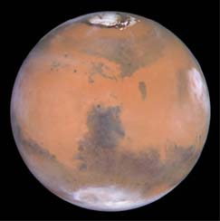
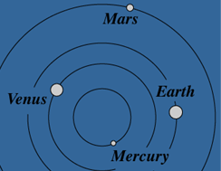

| Mass (Earth=1) | 0.107 |
| Equatorial diameter (km) | 6,790 |
| Period (years) | 1.88 |
| Mean distance from Sun, 10^6 km | 228 |
| Density (water=1) | 3.95 |
| Surface gravity m/s^2 | 3.72 |
|

The Red Planet features ice caps of carbon dioxide and water, a volcano 15 miles high (Olympus Mons), a canyon 3,000 miles long and 4 miles deep (the great rift valley, Valles Marinerus), and dry river channels. Many such features were explored in 1971-72 by the Mariner-9 craft. The later Viking landers performed surface tests, looking for evidence of life.
Perhaps Mars, now locked in an ice age, once had a denser atmosphere and liquid water on its surface. But NASA's two Viking landers (1976) found no life.
|